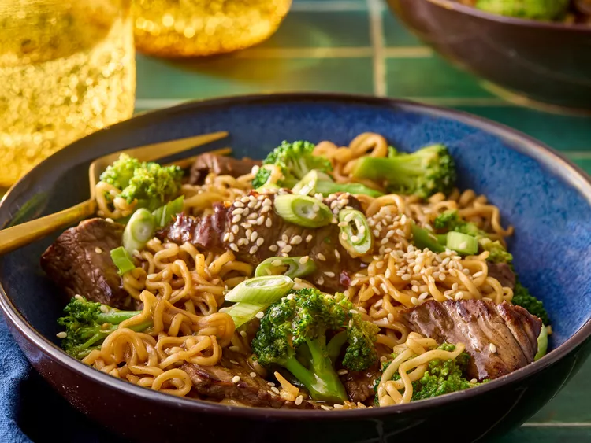

Beef Stir Fry

Description
This beef and broccoli ramen stir fry comes together quickly - adding the noodles with the steak prevents overcooking the noodles. Make sure you have all
your ingredients prepped before you start cooking.
Ingredients
- Beef Sirloin Steak
- Broccoli Florets
- Ramen Noodles
- Soy Sauce
- Garlic
- Ginger
- Vegetable or Sesame Oil
Steps
- Prep & Sauce
- Cook Noodles & Veggies
- Cook Steak
- Combine & Heat
- Serve
Home